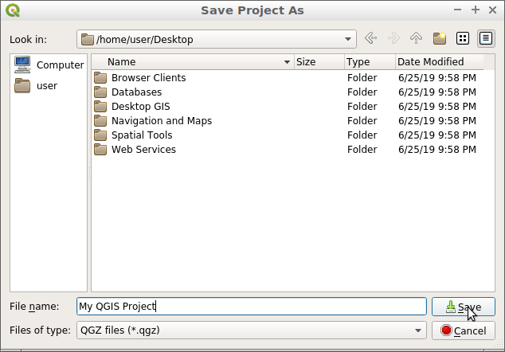
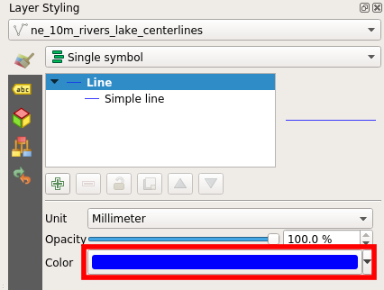

Guida rapida QGIS¶
QGIS è un client Desktop GIS facile da usare che permette di visualizzare, gestire, modificare, analizzare i dati e comporre mappe stampabili.
Contenuti
Avvia QGIS¶
Apri la cartella “Desktop GIS”.
Doppio clic sull’icona “QGIS”.
Vedrai QGIS avviarsi con un progetto vuoto. Le varie parti dell’interfaccia di QGIS sono elencate qui sotto.

[1] Barra dei menu: Accesso a varie funzioni di QGIS usando un menu gerarchico standard.
[2] Barre degli strumenti: Per l’interazione con la mappa, i layer, gli attributi e le selezioni.
[3] Pannello browser: Un browser di file spaziali che permette di trascinare e rilasciare contenuti nel riquadro della mappa.
[4] Pannello dei layer: Controlla i layer della mappa, il loro ordine e la visibilità.
[5] Barra di stato: Informazioni generali sulla mappa e accesso a una barra di ricerca universale.
Crea un progetto¶
Per creare un nuovo progetto, scegli .

Comincia ad aggiungere un layer vettoriale alla mappa. I layer possono essere aggiunti a QGIS usando il pannello del browser, situato sulla sinistra dello schermo.
Vai al pannello del browser sulla sinistra dello schermo.
Naviga l’albero delle cartelle fino a “home/data/natural_earth2”.
Seleziona “ne_10m_admin_0_countries.shp”.
Trascina il layer dal pannello del browser e rilascialo nel riquadro della mappa.

Una volta che il layer è stato trascinato nel riquadro della mappa, si vedrà un layer che mostra i paesi.

Ora prova ad aggiungere un layer raster al progetto.
Vai al pannello del browser sulla sinistra dello schermo.
Naviga l’albero delle cartelle fino a “home/data/natural_earth2”.
Seleziona “HYP_50M_SR_W.tif”.
Trascina il layer dal pannello del browser e rilascialo nel riquadro della mappa.

Una volta che il layer è stato trascinato sul riquadro della mappa, si vedrà un layer raster che mostra la copertura del suolo e la batimetria.

Ora che hai aggiunto del contenuto al tuo progetto, puoi salvare questo progetto in modo da poterci tornare in un secondo momento.
Scegli .

Imposta la posizione per salvare il progetto “/home/user/desktop”.
Chiama il progetto “Il mio progetto QGIS”.
Clicca “Salva”.
{kind=link}
Saprai che il progetto è stato salvato perché ci sarà un file di progetto sul desktop chiamato “Il mio progetto QGIS” e la parte superiore del tuo documento di progetto non si leggerà più come “untitled” ma invece si leggerà come “Il mio progetto QGIS”.

Apri un progetto esistente¶
Un progetto QGIS salva i layer, gli stili, le estensioni della mappa e le impostazioni per l’uso in un secondo momento. Queste informazioni sono memorizzate come un file di progetto QGIS e hanno un’estensione “.qgs” o “.qgz”, con “.qgz” che sarà il formato di file predefinito in QGIS in futuro.
Apri un progetto QGIS esistente e guarda come funziona.
Apri QGIS. Nota che quando QGIS è aperto ti verrà presentato un elenco di progetti recenti tra cui scegliere. Questo è un modo conveniente per aprire un progetto che hai usato recentemente.
Scegli .
Naviga a “/home/user/qgis-example”.
Seleziona il progetto “QGIS-NaturalEarth-Example.qgs”.
Clicca “Apri”.

Questo aprirà un progetto QGIS con una serie di set di dati Natural Earth, come mostrato di seguito. Questo progetto contiene un certo numero di layer nel pannello dei layer e sta visualizzando il contenuto spaziale nel riquadro della mappa.

I layer possono essere attivati o disattivati cliccando la casella di controllo accanto al nome del layer nel pannello dei layer. Quando un layer è attivato nel pannello dei layer, il riquadro della mappa viene aggiornato per visualizzare il layer. Un primo piano del pannello dei layer è mostrato qui sotto.

Interagisci con il pannello dei layer e cambia la visibilità di alcuni layer della mappa.
Clicca la casella di controllo accanto al layer “ne_10m_populated_places” per attivarlo.
Clicca sulla casella di controllo accanto al layer “Acqua” per disattivare il layer.
Nota come il riquadro della mappa è stato aggiornato per riflettere i cambiamenti nella lista dei layer. Ora puoi vedere il layer “ne_10m_populated_places” come punti, ma non puoi più vedere i fiumi e i laghi che sono dentro il layer “Waters”.

Oltre a controllare la visibilità dei layer, puoi anche cambiare l’ordine in cui i layer sono disegnati nel pannello dei layer. Questo viene fatto selezionando un layer nel pannello dei layer e trascinandolo su o giù nella lista. L’ordine in cui i layer appaiono nella lista dei layer è l’ordine in cui verranno disegnati nel riquadro della mappa.
Clicca con il tasto sinistro del mouse sul layer “HYP_50M_SR_W”.
Tenendo premuto il pulsante del mouse trascina il layer in cima alla lista.
Nota come il layer raster è ora in cima a tutti gli altri layer nel pannello dei layer. Questo ora visualizza il layer raster in cima a tutti gli altri layer nel riquadro della mappa.

Prova a spostare il layer “HYP_50M_SR_W” in fondo alla lista dei layer. Questa sarebbe una posizione più appropriata per un layer di mappa come questo.
Navigare la mappa¶
La barra degli strumenti di navigazione permette agli utenti di spostarsi sulla mappa e di cambiarne l’estensione.

[1] Mano: Permette di trascinare la mappa (“panning”) in una nuova posizione.
[2] Zoom in: Permette di ingrandire l’estensione della mappa.
[3] Zoom out: Permette di ingrandire la mappa.
[4] Zoom alla massima estensione: Cambia l’estensione della mappa per inserire tutti i layer della mappa nel riquadro della mappa.
[5] Zoom sul layer: Cambia l’estensione della mappa per adattarla all’estensione del layer evidenziato nel pannello dei layer.
Prova a cambiare l’estensione della mappa con lo strumento di zoom-in.
Seleziona lo strumento “Zoom in” dalla barra degli strumenti di navigazione.
Sposta il cursore sul riquadro della mappa.
Clicca e tieni premuto il tasto sinistro del mouse.
Tenendo ancora premuto il pulsante del mouse muovi il cursore in diagonale in qualsiasi direzione. Nota che questo disegna un rettangolo che è l’area che verrà ingrandita.
Rilascia il pulsante del mouse quando sei soddisfatto dell’area creata.
Nota
Il processo di utilizzo dello strumento zoom out è lo stesso dello strumento zoom-in. Il risultato è esattamente l’opposto.
Ora, guarda lo strumento di zoom alla massima estensione. Questo strumento ingrandisce la mappa fino ad un’estensione che si adatta a tutti i layer della mappa. Per usare questo strumento, clicca sul pulsante “Zoom al massimo”.
Infine, prova lo strumento zoom sul layer. Per usare questo strumento segui questi passi:
Clicca sul nome di un layer nel pannello dei layer.
Clicca sul bottone “Zoom al layer”.
La mappa dovrebbe ingrandire l’estensione del layer selezionato (“attivo”).
Stilizza i tuoi layer¶
I layer possono essere stilizzati in QGIS usando lo style dock. Lo style dock non è visibile di default, ma è facilmente accessibile tramite un pulsante in cima al pannello dei layer come mostrato qui sotto (Tasto F7).

Il pulsante di cui sopra agisce come un toggle in modo che il pannello degli stili possa essere facilmente nascosto alla vista cliccando nuovamente lo stesso pulsante (Tasto F7). Quando il pannello degli stili è abilitato apparirà sul lato destro dello schermo pronto a dare stile al layer attivo evidenziato nel pannello dei layer.
Con il pannello degli stili aperto, puoi modificare l’aspetto del layer mostrato in cima al pannello degli stili.

Con lo style dock ora aperto, puoi modificare il colore e lo spessore delle linee nel layer “ne_10m_rivers_lakes_centrelines”. Prova prima a modificare il colore.
Clicca sul campione “Colore” mostrato qui sotto. Questo lancerà una tavolozza di colori che ti permetterà di scegliere un colore diverso.
Nella palette “Seleziona Colore”, sposta il mirino sul tuo colore preferito.

Poi clicca sulla freccia indietro per tornare all’anteprima del rendering del simbolo.

L’anteprima del simbolo sarà aggiornata con il nuovo colore, e così anche il layer nel riquadro della mappa.

{kind=link}
Nel dock dello stile, possiamo anche modificare la dimensione degli elementi della mappa. Per modificare lo spessore delle linee segui questi passi:
Assicurati che il “ne_10m_rivers_lakes_centrelines” sia selezionato nella parte superiore del pannello degli stili.
Nel pannello dello stile inserisci il valore “0.5” nell’input della “larghezza”.

Nota che la linea nell’anteprima del simbolo aumenta in larghezza, e così anche le linee che sono nel riquadro della mappa.
Cose da provare¶
Estendi le funzionalità di QGIS con i Plugins.
Inizia a manipolare i dati con la Processing toolbox.
Usa QGIS per visualizzare il contenuto di un database PostGIS.
Prova a pubblicare la tua mappa QGIS sul web usando QGIS Map Server. nel menu menu.
E ora?¶
Per saperne di più su QGIS, un buon punto di partenza è la Pagina della documentazione sulla homepage di QGIS e l’eBook A Gentle Introduction to GIS.